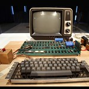

The Apple 1 was the first computer produced by Apple Inc. in 1976 and was designed and hand-built by Steve Wozniak.
It came as a bare circuit board and required a keyboard, monitor, and power supply to be usable.Steve Jobs and Steve Wozniak were co-founders of Apple Inc. and worked together to create the first Apple computer. They had a unique partnership,
with Jobs as the marketer and Wozniak as the technical genius, which helped to shape the personal computer industry.Customers can purchase Apple products and receive technical support and training at Apple Stores. They are known for their minimalist design,
knowledgeable staff, and hands-on demonstrations of Apple's latest products.The iPad is a tablet computer designed and developed by Apple Inc. It is designed for web browsing, media consumption, and light productivity tasks,
offering a larger screen and more versatility than a smartphone.The MacBook is a line of laptop computers designed and produced by Apple Inc. It is known for its sleek design, high-performance hardware,
and integration with other Apple products and software.The iPhone is a line of smartphones designed and marketed by Apple Inc. It is known for its user-friendly interface, powerful hardware,
and large selection of high-quality apps available through the App Store.